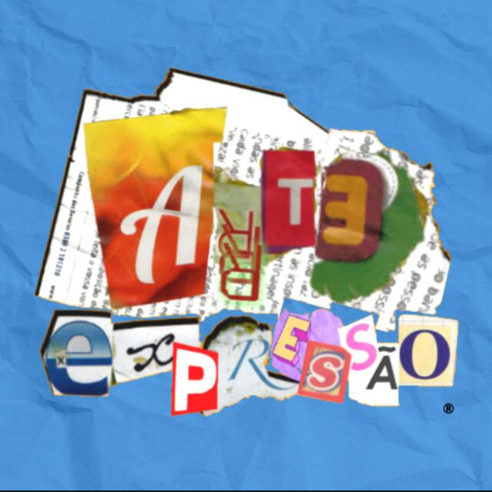

Arte Expressão é um acervo online em formato de podcast com diversos artistas que permeiam o movimento cultural de Artes Visuais, então se você gosta de boas conversas e bastante arte, se inscreve e acompanhe as novidades.
O elenco deste ilustre podcast é composto por Bruno (grunge), Iasmin (ilicitamente), Ubiratan (Bira)
E tinha o Wellington também (Fuh), mais ele saiu porque ta ligado né mano "essa mina aí ta arrastando,
e esse é um podcast de graffiti".
Porém o conteúdo é ótimo, vamos conferir conosco?
Então separe sua latinha de spray e VEM com NÓIS.
